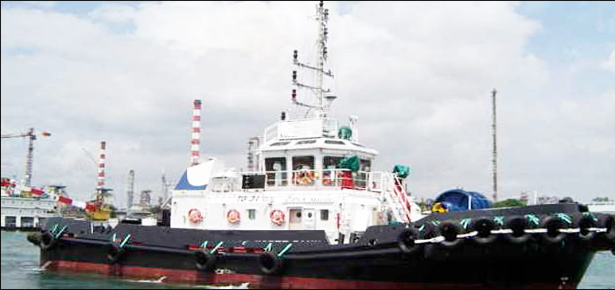

3,600 BHP 246 GRT ASD Tug Blt 2004 Sg
/ informed by BLUE MARINE CO., LTD.
(18-447)

- BUILT : 2004 KEPPEL SINGMARINE DOCKYARD, SINGAPORE
- FLAG/CLASS : SINGAPORE / Lloyd's Register of Shipping
- LOA/B/D/draft : 28.90 / 9.0 / 4.70M / 3.80m
- GRT : 246T
- MAIN ENGINE : NIIGATA 6L22HLX @ 900rpm 2 x 1323kW (TTL. 3600ps)
- GENERATOR : 2 x 95kW PERKINS 1006TWGM @ 1500rpm
- PROPELLER : Twin Screw Fixed Pitch – NIIGATA ZP-21 RC (GSO lever)
- SPEED : MAX 12knots
- ACCOMODATION : OFFICER 2P X 2berths, CREW 1P X 6berths (TTL 10 berths)
- FIFI PUMP : Twin Screw Fixed Pitch – NIIGATA ZP-21 RC (GSO lever) c/w water curtain
- FIFI MONITOR : 2 X SKUM FJM150 DUAL PURPOSE FOAM/WATER 600m³/hr
- BOLLARD PULL : 45 TON
- TANK CAPA. : FO 175.0 m³, Freshwater 25.0 m³, Dispersant 13.0 m³, Foam 13.0 m³
- TOW WINCH : PLIMSOLL PR-HATW / GDG-22 c/w anchor windlass
- INSPECTION & DELIVERY : SINGAPORE
Information History
- 180629 : She is available for sale.
- 180615 : She is available for sale.